classification in earth engine
Contents
classification in earth engine#
In this practical, you’ll get an introduction to using Google Earth Engine (GEE) to do image classification. Just like the previous weeks, you should be able to do finish the practical even if you have no prior experience with programming. All of the programming steps have been provided for you in a script, and your task will be to run each step in turn and analyse and interpret the results.
getting started#
Be sure to download all the data from the Practical 5 area on Blackboard before starting, or from the google drive link, then extract the zip file. You should have the following files/folders available:
├─ area_uncertainty.py
└─ LC08_L2SP_046028_20200823_20200905_02_T1/
├─ LC08_L2SP_046028_20200823_20200905_02_T1.vrt
├─ LC08_L2SP_046028_20200823_20200905_02_T1_ANG.txt
├─ LC08_L2SP_046028_20200823_20200905_02_T1_MTL.txt
├─ LC08_L2SP_046028_20200823_20200905_02_T1_SR_B1.TIF
├─ LC08_L2SP_046028_20200823_20200905_02_T1_SR_B2.TIF
├─ LC08_L2SP_046028_20200823_20200905_02_T1_SR_B3.TIF
├─ LC08_L2SP_046028_20200823_20200905_02_T1_SR_B4.TIF
├─ LC08_L2SP_046028_20200823_20200905_02_T1_SR_B5.TIF
├─ LC08_L2SP_046028_20200823_20200905_02_T1_SR_B6.TIF
└─ LC08_L2SP_046028_20200823_20200905_02_T1_SR_B7.TIF
Once you have downloaded the files, point your browser to https://code.earthengine.google.com, and log in if you need
to. In the Script manager under Reader, find the egm702 repository, and click on week5 to expand the
week 5 folder.
Just like for the previous weeks, the practical exercises are divided into a number of different scripts, labeled in order. For week 5, the scripts are:
01_unsupervised.js02_pixel.js03_obia.js
In the Script manager, open the script for part 1 by clicking on week5/01_unsupervised.js.
Remember that you have access to all of the scripts in the repository as a Reader, but in order to save any changes you’ll need to save the script to your own repository. Again, the easiest way for you to do this is to replace “YOUR NAME HERE!” on line 1 with your name, then click Save.
Save the script to your egm702 repository as week5/01_unsupervised.js - just like last week, you should
see a week5 folder appear in the repository with a new script, 01_unsupervised.js.
As you work your way through the practical, remember to save each script in this way, so that any changes you make to the scripts are saved in your repository.
part 1 - unsupervised classification#
Open the script for this part of the practical by clicking on 01_unsupervised.js in the Script manager, or using
this direct link.
In the first part of the practical, we’ll see how we can use unsupervised classification (also known as “clustering”) to help classify an image. Remember that unsupervised classification is a classification technique where we have little to no input to the classification routine. Instead, the classification algorithm determines how to group, or “cluster,” pixels, based on their properties.
Note
It’s important to note that the classes output by an unsupervised classification have no meaning, in the sense that they’re only groups of pixels based on the image data. After running an unsupervised classification, then, the next task is to interpret and identify what each of these classes represent.
The algorithm that we’ll use to cluster the image is an implementation of k-means1 clustering called WEKA k-means2.
The Image that we’re working with in this practical is the same August 2020 OLI image that we’ve seen before. In one band, this image has: 7601 * 7331 pixels = 55.7M pixels/band * 7 bands = 390M pixels - that’s a lot.
To help improve performance of the clustering algorithm, and prevent Out of Memory errors when we run the script,
we want to take a random sample of pixels, rather than attempting to run the clustering algorithm on the entire set of
~400M pixels:
// create sample points to run k-means clustering on
var training = img.select('SR_B.').sample({
region: boundary,
scale: 30,
numPixels: 5000
});
Once we have the training sample to work with, we have to actually train the Clusterer:
// train the unsupervised clusterer with 16 classes
var clusterer = ee.Clusterer.wekaKMeans({nClusters: 16}).train(training);
Remember that k-means requires that we specify the number of classes, k - the algorithm won’t decide for us how
many classes to use. In the above example, we’re using 16 classes, specified using the argument nClusters.
Note
In general, the number of clusters will depend on the particular scene - you may want to experiment with choosing
different numbers of clusters to see the effects on the end results. You can also use a different method,
such as ee.Clusterer.wekaXMeans() (documentation)
or ee.Clusterer.wekaCascadeKMeans() (documentation),
which are designed to optimize the number of clusters based on the input data.
Once we’ve trained the Clusterer, we have to actually apply it to the image:
// classify the image using the unsupervised classifier
var unsupervised = img.cluster(clusterer); // returns an image with a single band, 'cluster'
img = img.addBands(unsupervised.select('cluster')); // add the cluster band to the image
This will assign a class (or cluster value) to each input based on the “rules” that the Clusterer has learned from the input data. We can then add the classification band to the original image, before adding the image to the Map:
Map.addLayer(unsupervised.randomVisualizer(), {}, 'clusters');
Because the cluster values don’t have any actual meaning, we’re using ee.Image.randomVisualizer() to create a
random palette to view the image with - the important thing here is to be able to see how different pixels are grouped
together.
When you run the script, you will see something like the artistic image shown below:
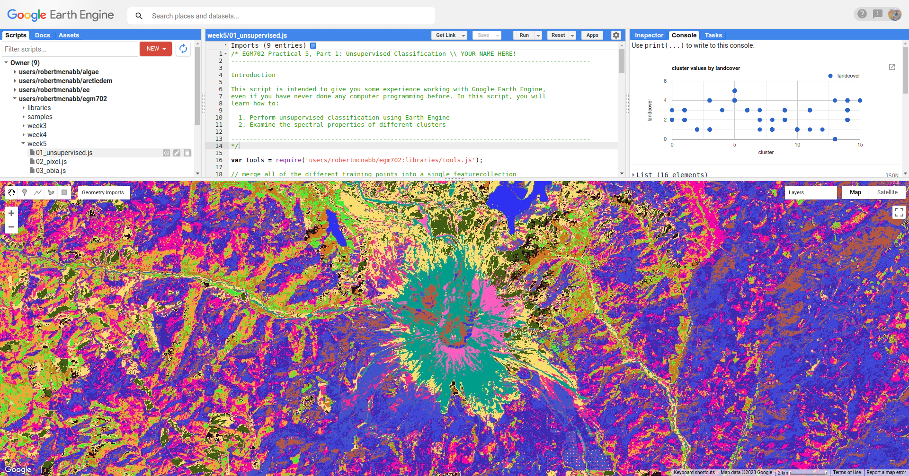{kind=link}
Here, we can pick out some of the features from the visible image - the mountain is primarily a teal color
(cluster value 15), the lakes are colored blue (cluster value 13), and much of the forested area is varying shades of
purple and pink (cluster values 8, 10, and 12).
To help with interpreting the different cluster values, I have also included a number of Point features as part of the script. To see these, you can toggle them on from the Geometry Imports menu:
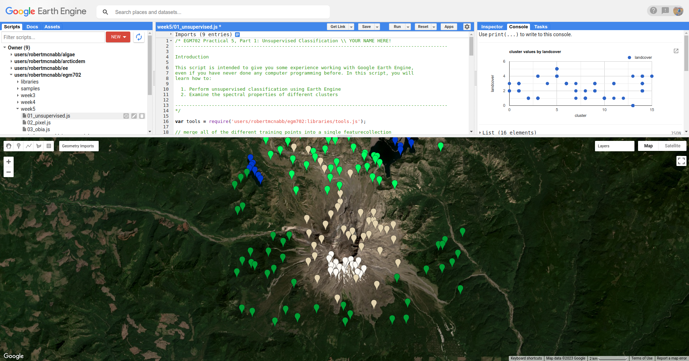{kind=link}
These points each have a landcover attribute that corresponds to the type of surface:
name |
value |
description |
|---|---|---|
|
0 |
surface water |
|
1 |
forest |
|
2 |
forest that has been recently cut down |
|
3 |
new vegetation that has grown post-eruption |
|
4 |
eruptive material and soil |
|
5 |
snow and ice |
At the top of the script (lines 19-24), you can see where we have merged the different training points together into a
single FeatureCollection, called trainingPoints.
The following block of code:
// sample the cluster values at each of the training points
var clusterPoints = unsupervised.select('cluster').sampleRegions({
collection: trainingPoints,
properties: ['landcover'],
scale: 30
});
Samples the cluster values at each of the training points, which we can then plot in a chart to show the different
landcover values that each cluster has been assigned to:
// create a chart that plots the cluster value vs the landcover class value
// for the training points
var chart = ui.Chart.feature
.byFeature({features: clusterPoints.select('landcover|cluster'),
xProperty: 'cluster',
yProperties: ['landcover']
}).setChartType('ScatterChart')
.setOptions({
title: 'cluster values by landcover',
hAxis: {title: 'cluster', titleTextStyle: {italic: false}},
vAxis: {title: 'landcover', titleTextStyle: {italic: false}},
});
print(chart); // remember to print the chart to the console
{kind=link}
The x-axis of this chart shows the cluster value, and the y-axis shows the landcover value. From this chart,
you can see, for example, that cluster number 13 is identified as both landcover 0 (water) and 4 (soil). We
also see that landcover 1 (forest) has been spread across a number of cluster values, as have landcover values
2 through 4.
This chart doesn’t tell us how many points belong to each; however, we can look at a confusion matrix of the landcover and cluster values to learn a bit more:
print(clusterPoints.errorMatrix('landcover', 'cluster'));
{kind=link}
This might be slightly difficult to interpret, so I’ve re-created it here with some labels:
cluster \ landcover |
0 |
1 |
2 |
3 |
4 |
5 |
6 |
7 |
8 |
9 |
10 |
11 |
12 |
13 |
14 |
15 |
|
0 |
0 |
0 |
0 |
0 |
0 |
0 |
0 |
0 |
0 |
0 |
0 |
0 |
40 |
0 |
0 |
|
0 |
0 |
3 |
8 |
0 |
0 |
0 |
1 |
13 |
0 |
13 |
1 |
1 |
0 |
0 |
0 |
|
4 |
16 |
0 |
0 |
0 |
0 |
0 |
1 |
1 |
7 |
0 |
0 |
0 |
0 |
11 |
0 |
|
1 |
7 |
0 |
0 |
1 |
0 |
11 |
1 |
0 |
6 |
0 |
4 |
0 |
0 |
9 |
0 |
|
0 |
0 |
0 |
3 |
0 |
12 |
0 |
0 |
0 |
0 |
0 |
0 |
0 |
1 |
4 |
20 |
|
0 |
0 |
0 |
0 |
0 |
20 |
0 |
0 |
0 |
0 |
0 |
0 |
0 |
0 |
0 |
0 |
Here, we can see that water (the first row of the table) has 40 points identified as cluster type 13, and no other
values. soil (the fifth row of the table) has 1 point identified as cluster type 13 – in other words,
cluster type 3 appears to correspond well to our water class.
Looking at the other cluster types for soil, we can see that most of the points are either cluster value 15
(20 points) or cluster value 5 (12 points), with only a few points labelled as something else.
We can see a similar pattern for clearCut, where most of the points are identified as cluster value 1 or 14
(16 and 11 points, respectively). However, we can also see that newGrowth also has a significant number of points
in these cluster values, suggesting that there might be some overlap between the chosen feature points for these two
classes.
Question
Why do you think that there might be a significant amount of overlap between the different feature classes?
Hint
Think about what each feature class actually represents - is it one specific surface type, or is it a mix of surface types?
The last part of this script displays the spectral properties of the clusters using two example scatter plots. First, we add the clustered Image to our original Image:
img = img.addBands(unsupervised.select('cluster'));
This way, we can select pixels from that Image based on what cluster they belong to.
Because of the number of pixels in the Image (remember: 7601 * 7331 pixels = 55.7M pixels),
we can’t just plot all of the pixel values at once. Instead, we again take a random sample of pixels,
this time using ee.Image.stratifiedSample():
var sample = img.select(['cluster', 'SR_B.']).stratifiedSample({
numPoints: 300,
classBand: 'cluster',
region: img.geometry(),
scale: 30,
projection: img.projection()
});
This selects a random sample of (up to) 300 pixels from each cluster.
Note
The output of ee.Image.stratifiedSample() is a FeatureCollection. Because we are limited by GEE 5000
elements for the Chart, we are limited to 5000 elements / 16 classes ~= 300 elements / class. To show more
elements per class, we would need to reduce the number of classes.
There are two examples shown in the script: a comparison of the NIR (OLI Band 5) and red (OLI Band 4), and a comparison of the green (OLI Band 3) and SWIR2 (OLI Band 7). The first example, NIR vs red, is shown below:
// compare NIR and Red
var chart1 = tools.clusterPlot(sample, 'SR_B5', 'SR_B4');
print(chart1);

Question
Why do you think there is overlap between the different clusters shown in the image above?
Question
In the chart above, you can see that cluster value 5 corresponds to pixels that have similarly high reflectance values in both NIR and red, while class 6 corresponds to pixels with high NIR reflectance and very low red reflectance.
What kind of surface type might each of these two clusters describe?
As stated above, the cluter values classes output by an unsupervised classification have no meaning - they’re only groups of pixels based on the image data. The next step for analyzing and using the output of the unsupervised classification would be to group different classes together based on the landcover type they represent (using, for example, the Reclassify tool in ArcGIS). For now, we’ll move on to look at other methods of classification.
part 2 - pixel-based classification#
Open the script for this part of the practical by clicking on 02_pixel.js in the Script manager, or using
this direct link.
In this part of the practical, we’re going to use a Random Forest3 classifier to classify the image. This is a supervised classification method, meaning that in order to train the classifier, we first have to provide labeled examples for the classifier to “learn” from.
In the GeometryImports menu, you can toggle on each of the training point layers to view them on the Map:

At the beginning of the script, we combine these individual layers into a single FeatureCollection in order
to use it for the classification:
// merge all of the different training points into a single featurecollection
var trainingPoints = water // landcover value 0
.merge(forest) // landcover value 1
.merge(thinVegetation) // landcover value 2
.merge(soil) // landcover value 3
.merge(snow); // landcover value 4
Then, at line 61, we sample the pixel values from the input image for use in training the classifier:
// select training points from the training image
var training = img.sampleRegions({
collection: trainingPoints,
properties: ['landcover'],
scale: 30
});
Next, we split the input data into two “training” and “testing” partitions using a 70-30 split (i.e., 70% of the data will be used for training, 30% for testing):
// split the training points into training, testing data
var split = 0.7;
var withRandom = training.randomColumn('random');
var trainingPartition = withRandom.filter(ee.Filter.lt('random', split));
var testingPartition = withRandom.filter(ee.Filter.gte('random', split));
Once we’ve split the input data into training and testing partitions, we can “train” our Classifier. GEE has a number of Classifier algorithms implemented:
Maximum Entropy (
amnhMaxent; documentation)Support Vector Machine (
libsvm; documentation)Minimum Distance (
minimumDistance; documentation)CART (
smileCart; documentation)Gradient Tree Boost (
smileGradientTreeBoost; documentation)Naive Bayes (
smileNaiveBayes; documentation)Random Forest (
smileRandomForest; documentation)
We’ll be using smileRandomForest with 10 “trees”:
// initialize a random forest with 10 "trees"
var classifier = ee.Classifier.smileRandomForest(10);
We use ee.Classifier.train(), along with the training data that we gathered earlier, to train the Classifier:
// train the classifier using the training partition
classifier = classifier.train({
features: trainingPartition,
classProperty: 'landcover',
inputProperties: bands
});
Once we’ve trained the Classifier, we can classify the testing data to see how well the classifier does in classifying data that it hasn’t seen before:
// classify the testing data using our trained classifiers
var test = testingPartition.classify(classifier);
Then, we calculate the error matrix for the testing data, which will compare the input label (landcover) to the
classified value (classification):
// make the confusion matrix
var cm = test.errorMatrix('landcover', 'classification');
We can then print the error matrix and accuracy measures such as the overall, producer’s, and user’s accuracy, along with the kappa statistic:
// print the confusion matrix, overall accuracy, kappa, producer's and user's accuracy
print('error matrix: ', cm,
'overall accuracy: ', cm.accuracy(),
'kappa: ', cm.kappa(),
"producer's accuracy:", cm.producersAccuracy().toList().flatten(),
"consumer's accuracy:", cm.consumersAccuracy().toList().flatten());
As a reminder:
the overall accuracy is the number of correctly classified points, divided by the total number of points. It tells us the percentage of training data that the Classifier has correctly identified.
the producer’s accuracy is the probability that a particular class is correctly classified, and it is calculated as the number of correctly classified points divided by the total number of points in each row of the ConfusionMatrix. This is also the complement of the omission error, the error introduced when pixels are incorrectly omitted from the correct class in the classification.
the consumer’s accuracy is the probability that the map classification is correct, and it’s the number of correctly classified points divided by the total number of points in each column of the ConfusionMatrix. This is also the complement of the commission error, the error introduced when pixels are included in the incorrect class in the classification.
The kappa score, or statistic4, is calculated as follows:
\[\kappa = \frac{p_o - p_e}{1 - p_e}\]where \(p_o\) is the observed accuracy of the classifier, and \(p_e\) is the hypothetical probability of chance agreement. The kappa score thus gives a measure of how much better the classifier performs than would be expected by random chance.
When you run the script, you should see the following in the Console panel after expanding the List element under “error matrix” (remember that your results may differ slightly):
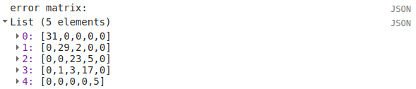{kind=link}
To help make this easier to read, I’ve added row/column labels to this table below:
water |
forest |
thin vegetation |
soil |
snow |
|
|---|---|---|---|---|---|
water |
31 |
0 |
0 |
0 |
0 |
forest |
0 |
29 |
2 |
0 |
0 |
thin vegetation |
0 |
0 |
23 |
5 |
0 |
soil |
0 |
1 |
3 |
17 |
0 |
snow |
0 |
0 |
0 |
0 |
5 |
Like with the unsupervised classification error matrix, the “rows” of this matrix correspond to the landcover class
that we have identified, while the columns correspond to the classified values. In the example above, we see that 31 of
our training samples were classified as landcover class 0 (water), and there were no water training samples that
were classified as something else.
We do see some misclassification for the other classes, though: two forest training points were misclassified as
thin vegetation, five thinVegetation points were misclassified as soil, and so on.
In the Console, you can also see the overall accuracy (90.5%), kappa statistic (0.876), and the producer’s and consumer’s (user’s) accuracy for each class:
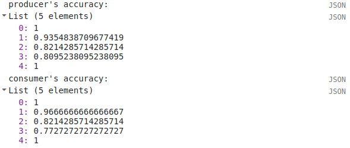{kind=link}
water |
forest |
thin vegetation |
soil |
snow |
|
|---|---|---|---|---|---|
producer’s accuracy |
100% |
93.5% |
82.1% |
80.9% |
100% |
consumer’s accuracy |
100% |
96.7% |
82.1% |
77.3% |
100% |
While these are encouraging results, it’s worth keeping in mind that we’re working with only a few samples for each class. With small sample sizes like this, our results are less likely to be an accurate reflection of the accuracy of the classified image.5
Question
Which of these classes
Once we have trained the Classifier, we use ee.Image.classify() to classify the image:
// classify the image
var classified = img.select(bands).classify(classifier);
var classPalette = ['013dd6', '059e2a', '2aff53', 'e3d4ae', 'fffbf4'];
// add the classified image to the map
Map.addLayer(classified, {min: 0, max: 4, palette: classPalette}, 'classified', true);
This creates a new Image with a single band, classification, where the pixel values are the landcover values
of each class from our training FeatureCollection, then adds it to the Map with the same color scheme as the
training point layers:
{kind=link}
Note that when you are zoomed out, the classification will look different due to the way that the image is
re-sampled at lower resolutions (similar to how it works in ArcGIS).
Question
Zoom in on the peak. Are there areas where you can see clear misclassification?
Once you’ve had a look at the classified image, have a look at the next object printed to the Console:
// print the classified area for each class
var classArea = tools.classifiedArea(classified, classes);
print('Classified Area: ', classArea);
This table shows the total classified area for each class in the image:
class |
area (km2) |
|---|---|
water |
40.63 |
forest |
963.61 |
thin vegetation |
369.67 |
bare soil |
106.03 |
snow |
0.59 |
Question
Based on your comparison of the classified image and the original image, which of these areas (if any) do you think are overestimates? Why?
The problem with summing up the classified area and taking it at face value, is that we know that it is incorrect. Based on the error matrix shown above, the classifier is not perfect, which means that we can’t assume that the area calculated by the classifier is correct, either.
Perhaps just as important as the area of each landcover class is the uncertainty of that classified area. Because of the errors of omission and commission (the complements of the producer’s and consumer’s accuracy discussed above), the area counts in the table above are biased - that is, they are skewed because they exclude (or include) areas that should be included (excluded) in the estimated area for each class.
Based on the work presented by Olofsson et al. 20136, we can use the error matrix that we produced as part of the Classifier training process to produce an unbiased estimate of the landcover area for each class, as well as the 95% confidence interval (CI) around that estimate.7
This has been implemented in the tools.errorDict() function:
// get the unbiased area for each class (after Olofsson)
var errorDict = tools.errorDict(cm, classes, classArea);
print('unbiased area (± 95% CI):', errorDict);
The table below compares the classified area, and the estimated area8:
class |
classified area (km2) |
estimated area ± 95% CI (km2) |
|---|---|---|
water |
40.63 |
40.63 ± 0.00 |
forest |
963.61 |
906.49 ± 85.29 |
thin vegetation |
369.67 |
380.97 ± 101.45 |
bare soil |
106.03 |
151.85 ± 56.44 |
snow |
0.59 |
0.59 ± 0.00 |
Question
Compare the estimated areas and the classified areas in the table above with your “eyeballed” estimate of which classes were over/underestimated in the classified image. How did you do?
Finally, we also use tools.areaChart() to create a bar chart comparing the two estimates:
// plot a chart of area by class
var area_chart = tools.areaChart(combArea, classes);
// show the chart of area by class for the two estimates
print(area_chart);
{kind=link}
Finally, the script initiates a Task to export the classified image to your google drive for further analysis
in your GIS software of choice. To start the task, click on the Tasks tab, then click Run.
One thing you may notice, especially when zooming in on the Map, is that the pixel-based classified image can appear noisy - that is, you may see a number of individual pixels that are classified differently to the pixels around it. As we have discussed in the lecture, this is because the pixel-based classification does not take any of the neighboring pixels into account.
In the next part of the practical, we’ll see how grouping pixels together based on their spectral properties changes the classification result.
part 3 - object-based classification#
Open the script for this part of the practical by clicking on 03_obia.js in the Script manager, or using
this direct link.
In this part of the practical, we’ll take a look at an example of object-based classification to help illustrate some of the differences between object-based image analysis (OBIA) and pixel-based classification.
The first sections of this script should look similar to the pixel-based script. The first major difference comes at line 62:
// set parameters for the size of the seeds and clusters for image segmentation
// 4 appears to be the minimum value for seed size
var seedSize = 4; //corresponds to 4 * 30 = 120 m spacing;
var clusterScale = 30;
This is where we set the parameters for the size of the seed grid used to segment the image. We’re using an algorithm called simple non-iterative clustering (SNIC; Achanta and Susstrunk, 20179) to segment our image, creating the objects that we’ll use for the classification.
This section starts by setting two parameters, seedSize and clusterScale. I’ve added these here, rather than
using the values directly in the code below, so that it’s easier to change the values if we want to experiment later on.
Next, we actually run SNIC on the image, using bands 1-7:
// create a layer to seed the segmentation algorithm
var seeds = ee.Algorithms.Image.Segmentation.seedGrid(seedSize);
// run simple non-iterative clustering (SNIC) on the image, using our seed layer
var snic = ee.Algorithms.Image.Segmentation.SNIC({
image: img.select('SR_B.'),
compactness: 0,
connectivity: 4,
neighborhoodSize: 128,
seeds: seeds
});
To help visualize the clusters, I’ve added two layers to the Map. The first, segments, shows the outlines of
the clusters created using the chosen parameters (roughly 120 m spacing):

The second, coarse segments, shows the clusters created using twice the spacing (roughly 240 m):

Question
Toggle the segments layer on, then zoom in to have a look around. How do the object boundaries you see relate
to the image underneath? Do they agree? Are there areas where the boundaries vary significantly from what you can
see in the underlying image?
This is something to keep in mind - the scale of our segmentation determines the size of the objects that we end up with. If we segment the image too coarsely, we may end up losing detail that we’re interested in.
Remember from the lecture that one of the things that we can do with OBIA that is more difficult to incorporate into pixel-based analysis is use image properties such as texture or contrast, or even the shape of our segments, to aid our classification.
Here, we’ll have a look at including texture into our classification using metrics extracted using the Gray Level Co-occurrence Matrix (GLCM; Haralick et al., 197310). The GLCM contains information about how frequently combinations of pixel values appear in a specified relationship in the image. We can use this, and the statistical metrics that we can extract from the GLCM, to analyze the texture of the image.
Here, we’ll look at three examples: the Angular Second Moment (ASM), the local contrast, and the entropy. The ASM measures how many repeated pairs of values we see within each small window. The local contrast tells us how much variation we see in the small area, and the entropy measures the randomness of the values in each small window.
Before we compute the GLCM, we make a grayscale image from the NIR, Red, and Green bands, following Tassi and Vizzari (2020)11:
// create a grayscale image to run texture on, following Tassi and Vizzari (2020)
// paper: https://doi.org/10.3390/rs12223776
// GEE script: https://code.earthengine.google.com/?accept_repo=users/mvizzari/Tassi_Vizzari_RS2020
var gray = img.expression(
'(0.3 * NIR) + (0.59 * R) + (0.11 * G)',
{'NIR': img.select('SR_B5'),
'R': img.select('SR_B4'),
'G': img.select('SR_B3')
}).rename('gray');
Map.addLayer(gray, {min: 7500, max: 17500}, 'grayscale', false);
this helps simplify the process somewhat - as we’ve seen in the lectures, there is often redundant information in nearby bands.
Once we’ve created this layer, we compute the GLCM and display the three images we’re interested in (the ASM, Contrast, and Entropy).
// get the GLCM for the grayscale image
var glcm = gray.toInt().glcmTexture({size: 2})
.reproject({crs: gray.projection(), scale: 30});
print('GLCM Image', glcm);
Map.addLayer(glcm.select('gray_asm'), {min: 0.0281, max: 0.0354}, 'ASM', false);
Map.addLayer(glcm.select('gray_contrast'), {min: 3e5, max: 5e6}, 'Contrast', false);
Map.addLayer(glcm.select('gray_ent'), {min: 3.391, max: 3.577}, 'Entropy', false);
The result of this is an image, glcm, that contains 18 variables for each band in the original image. For a full
list of the variables, you can see the
documentation.
Finally, have a look at the images that have been loaded in the map: the Angular Second Moment (ASM), the Contrast, and the Entropy. Take a look at the ASM image first:

Remember that this tells us something about the repeated pairs of values within the specified window (here, a
window of size 2) - brighter colors indicate higher values (more repeated values), darker colors indicate lower values
(fewer repeated values).
Question
Where do you see the most repeated values (brightest “colors”)?
What surfaces do these values represent?
Why do you think this would be so?
Look at the grayscale image (toggle it on in the Layers). How does the image that you see here compare to the ASM image? That is, where do you see more variation in the “color” values?
Now, have a look at the contrast layer:

Here, the bright colors represent the greatest contrast (i.e., difference) in values within the given window.
In a way, this is showing us the same sort of information as the ASM layer - high contrast indicates more variation
(and therefore fewer repeated values), while low contrast indicates less variation (and therefore more repeated values).
Finally, have a look at the entropy layer:

This is almost the inverse of the ASM layer - areas with high ASM values typically have lower entropy. This makes
some level of sense, given that more repeat values implies that the distribution is likely less random than values that
are more spread out.
Question
Try to compare the three images some more.
What patterns do you see in the contrast image?
How could you use the texture information to help differentiate between, for example, the surfaces on north flank of the volcano and the clear-cut areas in the southwest of the image, which have similar values in the grayscale image?
After this, we can add the texture bands to our image (lines 161-164):
img = img.addBands(glcm.select('gray_asm'))
//.addBands(glcm.select('gray_contrast')) // uncomment to add contrast
//.addBands(glcm.select('gray_ent')); // uncomment to add entropy
To start with, we’ve only added the ASM layer. Once we’ve had a look at those results, we can see how adding additional texture layers changes the classification results.
Now that we’ve segmented the image and had a look at the image texture, we’ll move on to actually classifying the image using OBIA.
This block of code:
// get the mean, std, and median values of all bands for each object
var img_mean = img.reduceConnectedComponents({
reducer: ee.Reducer.mean(),
labelBand: 'id'
});
var img_std = img.reduceConnectedComponents({
reducer: ee.Reducer.stdDev(),
labelBand: 'id'
});
var img_med = img.reduceConnectedComponents({
reducer: ee.Reducer.median(),
labelBand: 'id'
});
var pred_bands = ee.Image.cat([
img_mean,
img_std,
img_med
]).float();
Shows the other main difference between the pixel-based classification and the object-based classification. Here, we’re using a statistical description of the pixel values that fall within each object (mean, median, standard deviation), rather than the pixel values themselves.
Other than that, the remaining steps are the same for the object-based classification. We’re using a random forest classification, splitting the training points into training and testing partitions, training the classifier, and then applying the classifier to the image.
To see the final classification, you can turn on the classification layer:

Question
Zoom in on the classified image. What differences do you notice between the pixel-based classification from earlier and the object-based classification?
What about the error/accuracy metrics? How do the results for the two approaches compare?
In the script, I have added the segments layer to the Map twice, so that the segment boundaries can be seen
on top of the classification image. To compare the classification with the segment boundaries, just toggle the top
segments layer on:
{kind=link}
Question
Do the classification boundaries line up with the boundaries between objects that you can see in the original image?
Feel free to experiment with different band combinations if you like, to see if you can improve on the accuracy results.
Otherwise, just like with the pixel-based script from earlier, this script initiates a Task to export the classified image to your google drive for further analysis in your GIS software of choice. To start the task, click on the Tasks tab, then click Run.
Once you have downloaded the classified image, you can move on to the final part of the practical below.
part 4 - accuracy analysis#
For the final part of this practical, we’ll use one of the exported classified images to perform an additional accuracy analysis in ArcGIS.
Note
The instructions below show the object-based classification, but the steps are the same for the pixel-based classification. You are free to choose either image to work with.
Note
It is also possible to do this in QGIS, though some of the steps are slightly different. One benefit is that the semi-automatic classification plugin for QGIS will calculate the unbiased area estimate and uncertainty values as part of the accuracy analysis.
To get started, either open a new project in ArcGIS Pro, or use your existing project from week 2. For this part of the practical, we’ll be using the files that you downloaded at the beginning of the practical.
Note
Alternatively, you can download the Landsat scene used for the classification (Landsat product ID: LC08_L2SP_046028_20200823_20200905_02_T1) from https://earthexplorer.usgs.gov. If you do this, you will need to build a composite image using either GDAL or QGIS/ArcGIS.
Once you have the data downloaded and unpacked, add the VRT (composite image) to the ArcGIS Map:
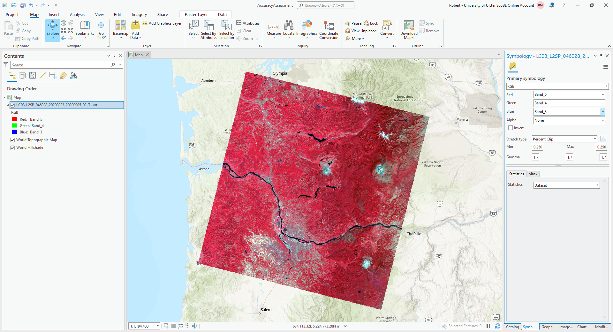{kind=link}
For this example, I am using the same NIR/Red/Green composite that we used in GEE, but feel free to adjust/change
this as needed. As you manually identify points, it may be easier to use different band combinations.
Next, add the classified image to the map. Rather than using the default colors created by ArcGIS, you can change the
symbology for this image to match the color scheme we used in GEE. First, open the Symbology tab for this layer
(right-click > Symbology), then change the Primary Symbology to Unique Values.
Then, click on the color patch for value 0, which will open the Color Editor window:
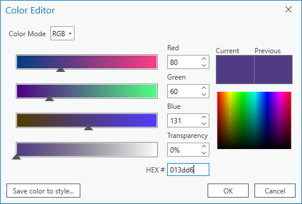{kind=link}
Rather than trying to match RGB values using the color picker, we can use the hex code for each color directly.
Under HEX# at the bottom, type/paste the hex code 013dd6, then click OK. You should see the color change
to the same blue color used for water in the GEE classified image.
Change the Label for this value from 0 to water, then click on the color patch for value 1. Copy the hex code
for forest from this table:
class name |
value |
hex code |
water |
0 |
|
forest |
1 |
|
thin vegetation |
2 |
|
soil |
3 |
|
snow |
4 |
|
and change the label as you did for water, then continue in this way until you have changed the colors and labels for all of the values. The end result should look something like this:
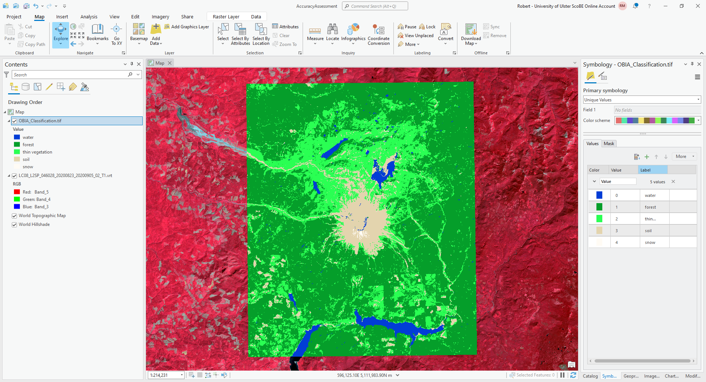{kind=link}
Now that we have the images added to the map, we can generate a number of random points to use for the accuracy
analysis.
From the Geoprocessing tab, open Create Accuracy Assessment Points (documentation):
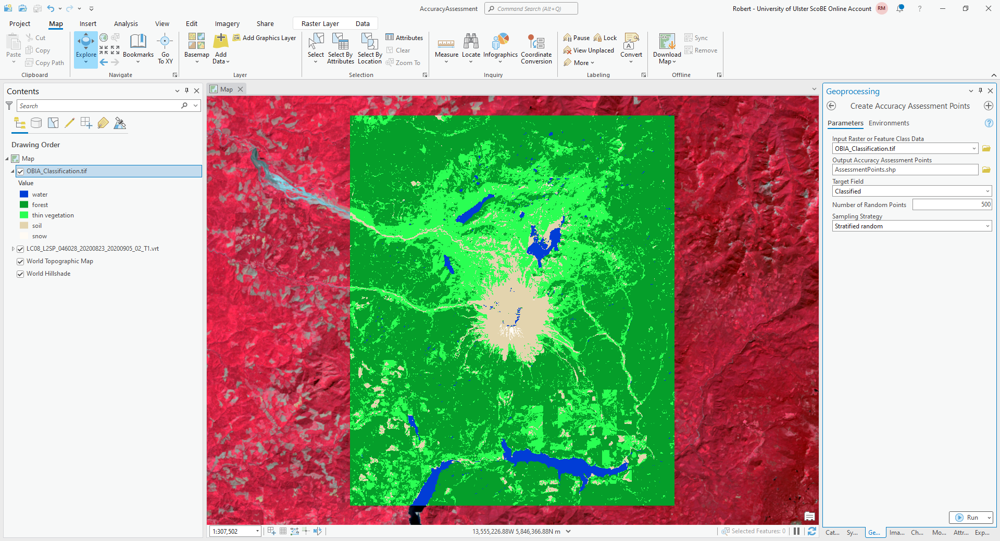{kind=link}
Under Input Raster or Feature Class Data, choose OBIA_Classification.tif (or RandomForestClassification
if you are using the pixel-based classification). Under Output Accuracy Assessment Points, create a new layer in
your project geodatabase (or a new shapefile) called AssessmentPoints. Under Target Field, choose classified,
and choose a Stratified random Sampling Strategy.
Note
With stratified random sampling, the Create Accuracy Assessment Points tool will create random points within each class, with the number of points for each class determined by the proportion of the area taken up by that class.
The default value of Number of Random Points is 500, which is what I will use here. Using this with the classified image ouptut from GEE, there were only 13 points classified as water, and only 10 points classified as snow. This is not really enough to get an accurate picture of the classification performance of these classes.
For now, however, the default value will suffice.
Click OK, and you should see the new layer added to the map. Right-click on the layer and select Attribute Table to show the attribute table for these points:
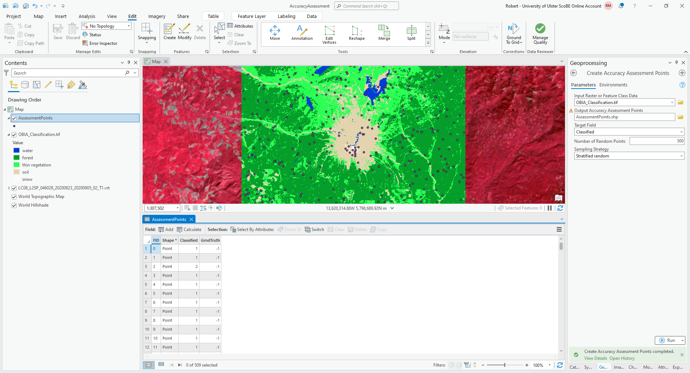{kind=link}
In this table, you should see there is a Classified field, and a GrndTruth field. The Classified
field contains the value from the classified image for each point, while the GrndTruth field is currently set to
a value of -1 for all points, indicating that it has not been entered.
Our job now is to manually enter the class value for each point.
Warning
Technically, because this is an object-based classification, we should be looking at the image objects where each point is located, rather than the individual pixels.
For the purposes of this exercise, it will be fine to use the pixels.
To get started, right-click on the first row of the table, then select Zoom To (you may want to zoom further in/out, depending on the scale of the map):
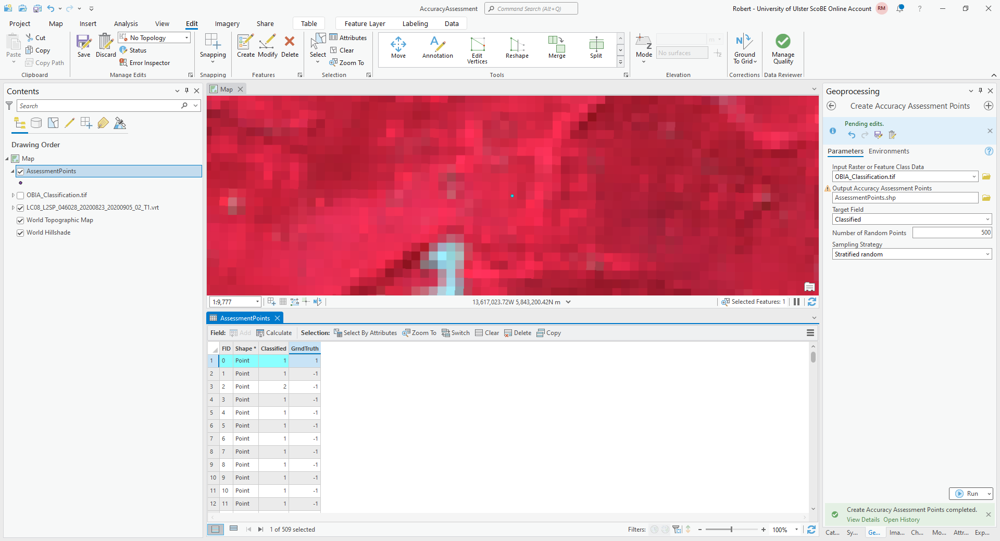{kind=link}
The Classified value for this point is 1, corresponding to forest. To my eye, this point does indeed look like
it is located in a forest, so I have entered a 1 in the GrndTruth field for this row.
Note
Remember that this is only an example - your results will most likely be different!
Move on to the next point, and the next point, and so on, until you have manually entered the values for each point. In addition to the Landsat image, you can also use the ESRI World Imagery to help interpret each point, though keep in mind that those images may be out of date compared to the Landsat image.
Danger
BE SURE TO SAVE YOUR CHANGES OFTEN!!
Once you have finished entering each point value, open the Compute Confusion Matrix tool from the Geoprocessing tab:
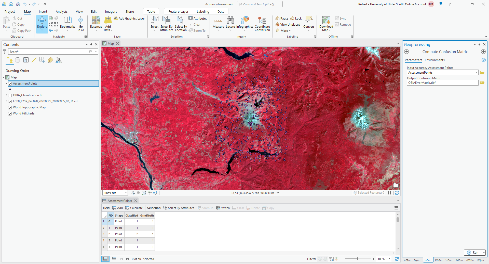{kind=link}
The Input Accuracy Assessment Points should be your AssessmentPoints layer. Save the
Output Confusion Matrix to a file called OBIAErrorMatrix.csv, in the same folder as your classification maps.
Warning
For the provided python script to work, it is important that this file be saved with a .csv extension, and
that you save it to the same folder where the area_uncertainty.py script is saved.
Click Run, and you should see a new layer under Standalone Tables in the layer menu. Right-click on this layer, then select Open to open and view the table:
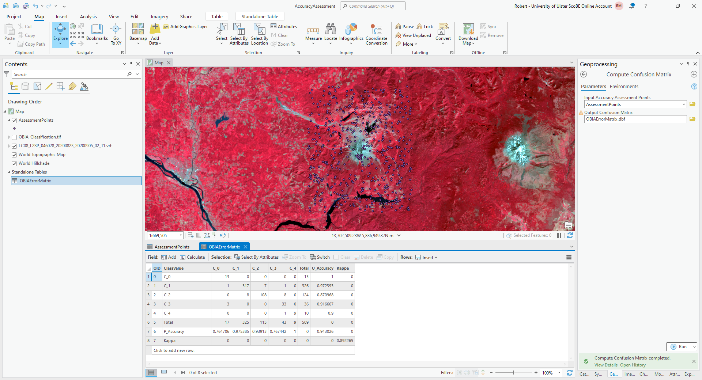{kind=link}
The error matrix shown above contains a row for the producer’s accuracy and a column for the user’s (consumer’s)
accuracy, as well as the kappa statistic for the classification. I have re-created the error matrix here, with updated
labels:
water |
forest |
thin vegetation |
soil |
snow |
|
|---|---|---|---|---|---|
water |
13 |
0 |
0 |
0 |
0 |
forest |
1 |
317 |
7 |
1 |
0 |
thin vegetation |
0 |
8 |
108 |
8 |
0 |
soil |
3 |
1 |
0 |
33 |
0 |
snow |
0 |
0 |
0 |
1 |
9 |
and the producer’s and consumer’s accuracy:
water |
forest |
thin vegetation |
soil |
snow |
|
|---|---|---|---|---|---|
producer’s accuracy |
76.5% |
97.5% |
93.9% |
76.7% |
100% |
consumer’s accuracy |
100% |
97.2% |
87.1% |
91.7% |
90% |
Question
Compare the error matrix and accuracy measures from your table to the output from GEE.
What values have changed dramatically (if any)?
What values have stayed largely the same?
Do you think that your result gives a good representation of the accuracy of the classification for all classes? Why or why not?
The final step for the practical will be re-calculating the area and uncertainty estimates using this new error matrix,
using the area_uncertainty.py script provided in the practical data.
First, open the script in a text editor such as Notepad, and change the following line (line 81):
mapped_area = np.array([water, forest, thin_vegetation, soil, snow])
to include the actual areas output from GEE. For example, using the areas from above, the line would look like this:
mapped_area = np.array([39.36, 982.78, 349.46, 107.97, 0.96])
Important
Make sure that the order matches the order of the columns/rows in the error matrix. This should be the same order as in the table shown above; i.e.:
water, forest, thin vegetation, soil, snow
Warning
If you have saved the error matrix to a filename other than OBIAErrorMatrix.csv, or you have saved it to a
location other than the same folder where the area_uncertainty.py script is saved, you will need to change the
filename at line 77:
errmat = load_errmat('OBIAErrorMatrix.csv')
Now, from the Start menu, find the ArcGIS folder, and click on Python Command Prompt:
{kind=link}
Navigate to the folder where area_uncertainty.py is kept using cd:
cd C:\Users\bob\EGM702\Practicals\Week 5\
Then, run the script by typing python area_uncertainty.py at the prompt. You should see the following output, or
something very similar:
{kind=link}
Question
Compare the output of this script to the output from GEE.
How do the area estimates and associated uncertainties compare?
Which estimates do you think are more realistic/representative? Why?
That is the end of the EGM702 practicals. If you are still wanting more practice/ideas for your project, feel free to have a look at some of the suggestions below - otherwise, turn off the computer, go outside, and enjoy the (hopefully) nice weather. :)
next steps#
unsupervised classification#
How does increasing (or decreasing) the number of sample points used to train the Clusterer affect the results?
Try varying the number of clusters, to see what difference it makes for the overlap between different landcover classes. If you reduce the number of clusters to 8, do you see more or less overlap? What about for 10 clusters?
Instead of using
ee.Clusterer.wekaKMeans(), try one of the other clusterers available, such asee.Clusterer.wekaXMeans(), which finds the “best” number of clusters for a given input image and range of number of clusters. Replace the code at line 42 with the following:var clusterer = ee.Clusterer.wekaXMeans({maxClusters: 16}).train(training);
pixel-based classification#
Try varying the number of ‘trees’ used in the random forest classifier. How does this impact the estimated accuracy of the classification?
Test how does adding additional bands such as the surface temperature or the NDVI affects the classification, by removing the comment (
//) symbol from the beginning of lines 28-32. Try different combinations of the indices included - some additional bands may help more than others.
object-based classification#
Try varying the number of ‘trees’ used in the random forest classifier. How does this impact the estimated accuracy of the classification?
Test how does adding additional bands such as the surface temperature or the NDVI affects the classification, by removing the comment (
//) symbol from the beginning of lines 29-34. Try different combinations of the indices included - some additional bands may help more than others.You can also try adding different texture measures by
notes and references#
- 1
For a (brief) overview of k-means clustering, the wikipedia page is a good place to start: https://en.wikipedia.org/wiki/K-means_clustering
- 2
Frank, E., M. A. Hall., and I. H. Witten (2016). The WEKA Workbench. Online Appendix for “Data Mining: Practical Machine Learning Tools and Techniques”, Morgan Kaufmann, Fourth Edition, 2016. [pdf]
- 3
e.g., Belgiu, M. and L. Drăguţ (2016). ISPRS J. Photogramm. Rem. Sens. 114, 24-31. doi: 10.1016/j.isprsjprs.2016.01.011
- 4
sometimes also referred to as Cohen’s kappa
- 5
e.g., Congalton, R. G. (1988). Photogrammetric Eng. Rem. Sens. 58(5), 593-600. [PDF]
- 6
Olofsson, P., et al. (2013). Rem. Sens. Env. 129, 122–131. doi: 10.1016/j.rse.2012.10.031
- 7
reminder: the 95% confidence interval is obtained using 1.96 times the standard error.
- 8
Note that in this example, because the classification has worked “perfectly” for two classes, water and snow, the standard error for each class is 0. This is not real, as you can tell by looking at the areas at the top of the mountain that have been classified as “water”, and the “snow” that has been classified at low elevations. As we will see in part 4, rather than using the testing split, we could instead select a number of random points from each landcover class in the classified image, and compare the computer-classified values with human-classified values. This will give a better idea of both the estimated area, and the uncertainty.
- 9
Achanta, R. and S. Susstrunk (2017). In Proc. IEEE Conf. Comp. Vis. Patt. Recog., pp. 4651–4660. doi: 10.1109/CVPR.2017.520 [open-access pdf]
- 10
Haralick, R. M., K. Shanmugam and I. Dinstein (1973). IEEE Trans. Systems, Man, Cybernetics, SMC-3(6), pp. 610-621. doi: 10.1109/TSMC.1973.4309314.
- 11
Tassi, A. and M. Vizzari (2020). Rem. Sens. 12, 3776. doi: 10.3390/rs12223776